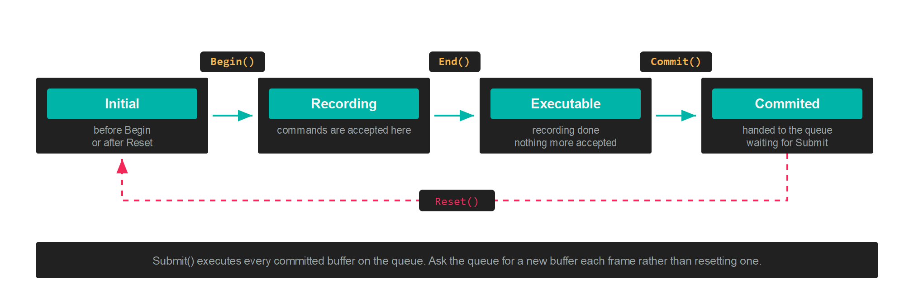

CommandBuffer
A CommandBuffer stores commands until they are committed for execution by the GPU. Nothing you record runs at the moment you call it. The buffer accumulates a list, and the GPU sees that list only after its CommandQueue submits.
Command buffers are transient and single use. Ask the queue for a new one each frame rather than holding on to one.
The states a buffer passes through

| CommandBufferState | Meaning |
|---|---|
| Initial | Before Begin has been called, or after Reset. |
| Recording | Between Begin and End, where commands are accepted. |
| Executable | After End. Recording has finished and the buffer can be committed. |
| Commited | After Commit. The buffer is waiting for the queue to submit it. |
State is readable at any time, which is useful when a helper method has to know whether recording is already open.
Recording
var commandBuffer = this.commandQueue.CommandBuffer();
commandBuffer.Begin();
// ...record commands here...
commandBuffer.End();
commandBuffer.Commit();
this.commandQueue.Submit();
Begin() has to be called before any other command. End() closes recording, Commit() hands the buffer to its queue, and Submit() on the queue starts the GPU work.
Render passes
Draw commands only make sense inside a render pass, which names the FrameBuffer being drawn into and what to clear it to:
RenderPassDescription renderPassDescription = new RenderPassDescription(
this.frameBuffer,
new ClearValue(ClearFlags.All, Color.CornflowerBlue));
commandBuffer.BeginRenderPass(ref renderPassDescription);
// ...draws...
commandBuffer.EndRenderPass();
RenderPassDescription
| Property | Type | Description |
|---|---|---|
| FrameBuffer | FrameBuffer |
The attachments this pass renders into. |
| ClearValue | ClearValue |
What each attachment is cleared to when the pass opens. |
The constructor throws ArgumentException when the number of colour clear values does not match the number of colour targets on the framebuffer.
ClearValue
| Property | Type | Description |
|---|---|---|
| Flags | ClearFlags |
Which attachments to clear. |
| ColorValues | Vector4[] |
One clear colour per colour attachment. |
| Depth | float |
Depth clear value. |
| Stencil | byte |
Stencil clear value. |
ClearValue.Default clears one colour attachment to CornflowerBlue, depth to 1 and stencil to 0. ClearValue.None clears nothing, which is what a pass that draws on top of existing content wants.
ClearFlags
| ClearFlags | Value | Description |
|---|---|---|
| None | 0 | Clear nothing. |
| Target | 1 | Clear the colour attachments. |
| Depth | 2 | Clear the depth attachment. |
| Stencil | 4 | Clear the stencil attachment. |
| All | 7 | Target, Depth and Stencil together. |
Important
Barriers, buffer updates and copies belong outside the render pass. Record them between Begin() and BeginRenderPass(), or after EndRenderPass(). See Barriers.
Setting state before a draw
| Method | Purpose |
|---|---|
SetGraphicsPipelineState(pipeline) |
Binds a GraphicsPipeline. |
SetResourceSet(set, index, offsets) |
Binds a ResourceSet to a register space. |
SetVertexBuffers(buffers) |
Binds the vertex buffers, matching the pipeline's InputLayouts. |
SetVertexBuffer(slot, buffer, offset) |
Binds one vertex buffer at a given slot. |
SetIndexBuffer(buffer, format, offset) |
Binds an index buffer. IndexFormat.UInt16 by default. |
SetViewports(viewports) |
Sets the viewport rectangles. |
SetScissorRectangles(rectangles) |
Sets the scissor rectangles. |
Note
Viewports and scissor rectangles are not part of the pipeline state, so they have to be set inside every render pass. Forgetting the scissor rectangle produces a pass that clears correctly and then draws nothing.
Drawing
| Method | Purpose |
|---|---|
Draw(vertexCount, startVertexLocation) |
Draws from the vertex buffer directly. |
DrawIndexed(indexCount, startIndexLocation, baseVertexLocation) |
Draws through the index buffer. |
DrawInstanced(...) |
Draws the same geometry many times. |
DrawIndexedInstanced(...) |
Indexed and instanced together. |
DrawInstancedIndirect(argBuffer, offset, drawCount, stride) |
Reads the draw arguments from a GPU buffer. |
DrawIndexedInstancedIndirect(...) |
Indexed version of the same. |
The indirect variants take their arguments from a Buffer created with BufferFlags.IndirectBuffer, which lets a compute shader decide how much to draw without the result travelling back to the CPU.
Compute and ray tracing
| Method | Purpose |
|---|---|
SetComputePipelineState(pipeline) |
Binds a ComputePipeline. |
Dispatch(groupCountX, groupCountY, groupCountZ) |
Launches a grid of thread groups. |
Dispatch1D, Dispatch2D, Dispatch3D |
Take the problem size and compute the group count for you. |
DispatchIndirect(argBuffer, offset) |
Reads the group counts from a GPU buffer. |
SetRaytracingPipelineState(pipeline) |
Binds a RaytracingPipeline. |
DispatchRays(description) |
Launches the ray generation grid. |
BuildRaytracingAccelerationStructure(...) |
Builds a bottom or top level structure. |
UpdateRaytracingAccelerationStructure(ref tlas, description) |
Rebuilds a top level structure in place. |
SetMeshShaderPipelineState(pipeline) |
Binds a mesh shader pipeline. |
DispatchMesh(groupCountX, groupCountY, groupCountZ) |
Launches mesh shader groups. |
These are recorded outside a render pass, the same as copies and barriers.
Moving data
| Method | Purpose |
|---|---|
UpdateBufferData(buffer, data, ...) |
Writes CPU data into a buffer as part of the recorded stream. |
CopyBufferDataTo(origin, destination, sizeInBytes, ...) |
Copies between two buffers on the GPU. |
CopyTextureDataTo(source, destination) |
Copies a whole texture, or one mip level and array layer, or a region. |
Blit(source, destination) |
Copies with scaling and format conversion. |
ResolveTexture(source, destination) |
Resolves a multisampled texture into a single sampled one. |
GenerateMipmaps(texture) |
Fills the mip chain from level 0. |
Copies need their source and destination in the CopySrc and CopyDst states first. See Barriers.
Barriers
Five overloads, all recording the same operation. See Barriers for what to pass and when.
commandBuffer.Barrier(new Texture.Barrier(this.texture, Texture.StateFlags.PixelShaderResource));
Queries
| Method | Purpose |
|---|---|
WriteTimestamp(heap, index) |
Records a GPU timestamp into a QueryHeap. |
BeginQuery(heap, index) |
Opens an occlusion query. |
EndQuery(heap, index) |
Closes it. |
Debug markers
Markers group commands in a graphics debugger, and cost nothing in a release build:
commandBuffer.BeginDebugMarker("Shadow pass");
// ...draws...
commandBuffer.EndDebugMarker();
commandBuffer.InsertDebugMarker("Lights uploaded");
Setting commandBuffer.Name labels the buffer itself in the same tools.
Recording on several threads
Each command buffer records independently, so several threads can record at the same time as long as no two share a buffer. Commit them all and submit once:
Parallel.For(0, threadCount, i =>
{
var commandBuffer = this.commandQueue.CommandBuffer();
commandBuffer.Begin();
// ...record this thread's slice...
commandBuffer.End();
commandBuffer.Commit();
});
this.commandQueue.Submit();
The queue's pool holds 64 buffers, so a frame cannot have more than 64 uncommitted buffers alive on one queue.
Warning
GraphicsContext operations that record onto a shared internal copy buffer, such as UpdateBufferData on the context rather than on your own command buffer, are not free to run concurrently. A barrier and the copy that follows it have to stay sequential.